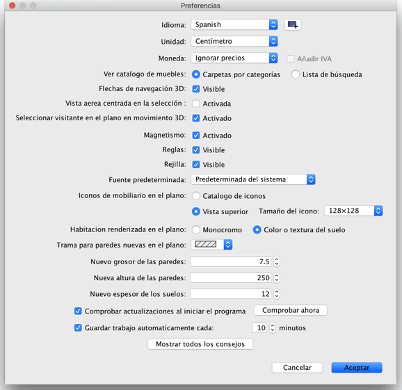

Para editar las preferencias de Sweet Home 3D, elige Sweet Home 3D
> Preferencias... en Mac OS X o Archivo > Preferencias...
en otros sistemas.

En el panel preferencias, puedes elegir el Idioma usado en la
interfaz de usuario de Sweet Home 3D y las Unidades usadas para
dibujar las reglas y rejillas del plano, y mostrar las longitudes.
Los botones Carpetas por categorias y Lista de búsqueda
botones te permiten elegir cómo se mostrara el catálogo de muebles en
cada ventana de Sweet Home 3D.
La casilla de
verificación Flechas de navegación en 3D mostrará las flechas
que te ayudarán a navegar en
la vista 3D.
La casilla Magnetismo activa o desactiva el magnetismo usado
en el plano mientras dibujas las paredes
y colocas el mobiliario.
La casilla Reglas permite mostrar u ocultar las reglas del plano.
La calilla Rejilla permite mostrar u ocultar la rejilla del plano.
Los botones Catálogo de iconos y Vista superior
te permiten elegir la forma en que el mobiliario sera dibujado en el
plano (ver imágenes abajo).
Los botones Monocromo y Color o textura del suelo te permiten
elegir si las habitaciones se dibujaran en el plano con el color o textura
que elegiste para el suelo, o con un color gris (impreso como blanco).
La lista desplegable Modelo de pared en el plano te permite elegir
el relleno usado en las paredes en el plano.
El valor Nuevo grosor de las paredes establece el grosor de
todas las paredes que serán creadas una vez que el panel de preferencias
se cierre.
El valor Nueva anchura de las paredes establece la anchura de
todas las paredes que sean creadas una vez que el panel de preferencias
se cierre.
Por último, si pulsas Mostrar todos los consejos, activaras
la visualizacion de consejos que desactivaste al marcar la casilla de
verificación No mostrar este consejo de nuevo en los cuadros
de diálogo que aparecen al hacer clic sobre algunas de las herramientas.
Esto significa que todos los cuadros de diálogo apareceran de
nuevo.
 |
|
 |
Plano por defecto renderizado con
catalogo de iconos,
suelos monocromos y relleno de paredes rallado a 45º |
Plano renderizado con vista superior,
suelo coloreado y relleno de paredes negro |
|